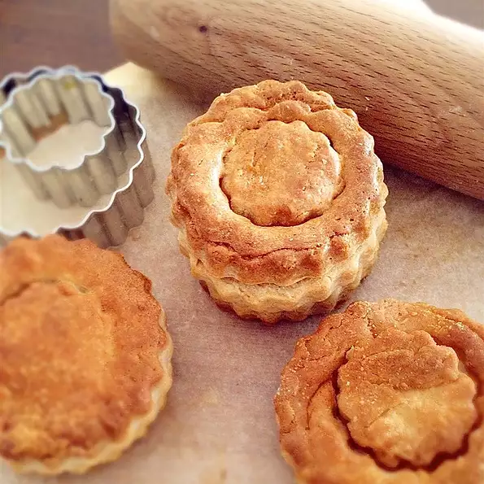

Puff Pastry Shells

Description
These are fairly simple to make, and once baked the real fun begins, as they can hold so many amazing fillings, both sweet and savory. The key is making sure your puff pastry dough is very firm, and very cold, preferably still partially frozen, before you start cutting it. You want nice clean cuts, because if you mash the layers of pastry together, your shells will not rise as high, and they can also bake into some strange shapes.
Ingredients
- 1 egg, beaten
- 2 tablespoons water
- 4 sheets frozen puff pastry
Steps
- Beat egg and water together in a small bowl.
- Cut two rounds from each sheet of puff pastry using a 3-inch round cutter, forming 8 circles. Use a 2 1/2-inch round cutter to cut through 4 of the rounds. Place entire cut round on top of an un-cut round. Brush each with egg mixture.
- Bake in the preheated oven until puffed and golden, 20 to 25 minutes.